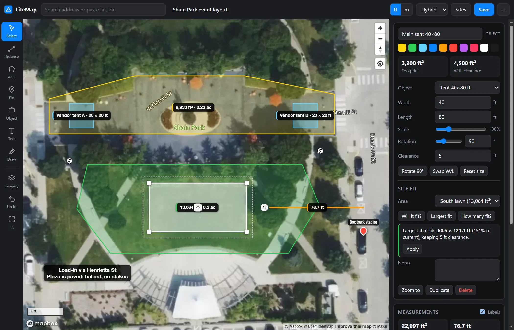
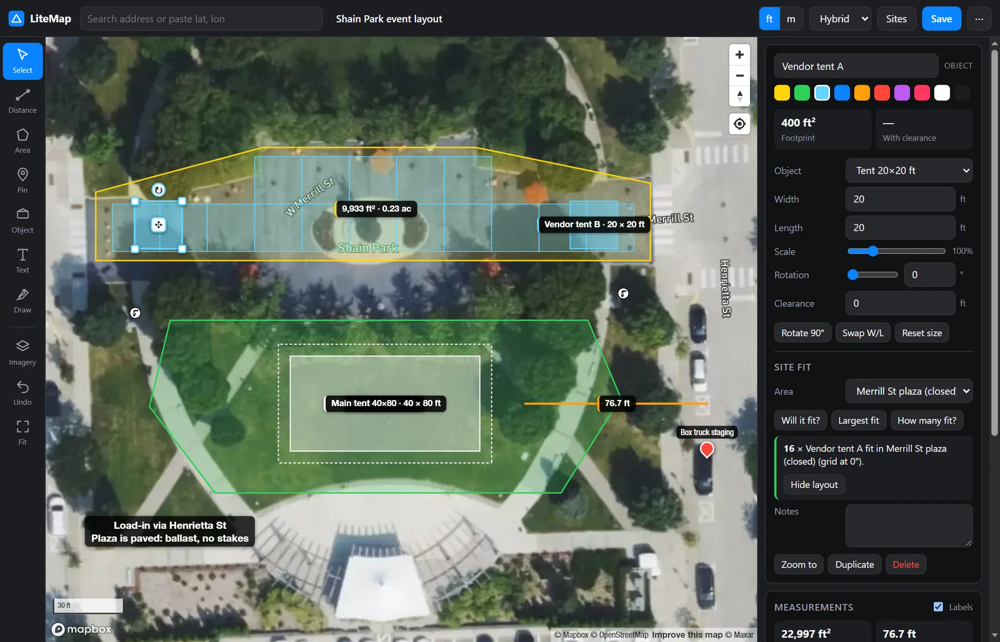
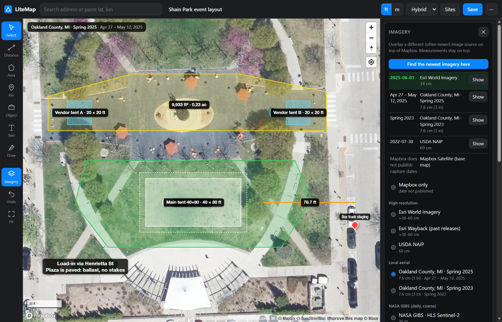
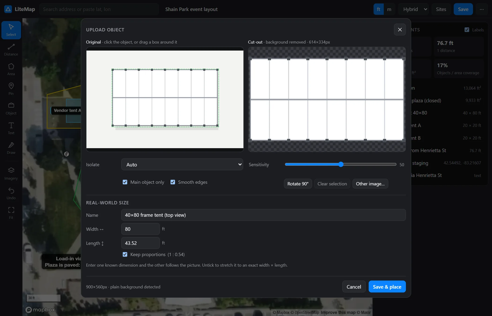
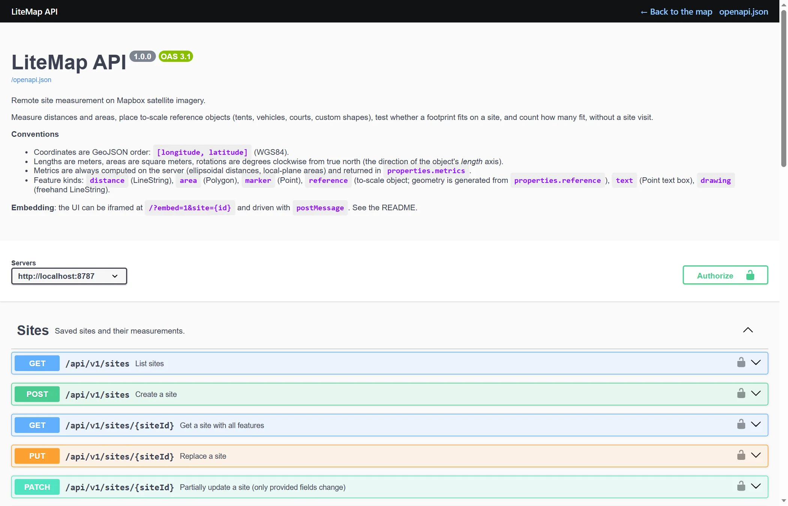

Measure any site from satellite imagery, without a site visit
Measure distances and areas, drop tents, trucks and equipment at true scale, and find out what fits and how many fit, using the newest imagery available. Self-hosted, zero dependencies, with a REST API your other software can call.

Everything you need for a remote site survey
A first-pass survey you can do from a desk: answer "will it fit?" from the office, share the result, and send someone to site only when it's needed.
Distances and areas
Live segment lengths and running totals, area in ft² and acres or m² and ha, plus perimeter. Vertex snapping and full undo.
To-scale objects
Tents from 10×10 to 100×200 ft, stages, vehicles, trailers, containers, lifts, restrooms, tables and courts, with a clearance setting for stakes and egress.
Will it fit? How many?
Finds the best position and rotation, the largest size that fits, and how many copies pack into an area, and draws the layout.
The newest imagery
Overlay Esri, Wayback, NAIP, 3-inch county aerials, NASA GIBS or SkyFi, and see the actual capture date of each at your site.
Upload your own objects
Drop a photo or drawing. On-device AI cuts the object out and crops it; you set the real size, or stretch it to exact dimensions.
API and embed
OpenAPI 3.1 REST API, Swagger UI, API keys and CORS. Embed the map in your CRM and drive it with postMessage.
Annotate and share
Pins, text boxes and freehand drawing. Share a link, or export GeoJSON, CSV, a text summary or a satellite snapshot.
Private by design
Self-hosted. Your sites stay in a JSON file on your own server, and image processing runs in the browser.
Know how many fit before you quote
Outline the usable ground and pick an object. LiteMap packs a grid aligned to the area's edges and counts the copies, honouring the clearance you set.
- Booths on a closed street, rows of tents on a lawn
- Parking stalls in a lot, tables in a hall
- "Largest fit" finds the biggest tent the space takes

See the site as it is today
Providers refresh on different schedules, so one map can show a pool still being dug and another show it finished. LiteMap checks the capture date of every source at your site and ranks them newest first.
- Esri World Imagery and every Wayback release since 2014
- USDA NAIP and 3-inch county flights
- NASA daily imagery and optional SkyFi commercial archive search

Your equipment, at true scale
Drop a product render, plan drawing or drone photo. LiteMap isolates the object in your browser, using AI for photos and colour keying for plain backgrounds, then crops it. Type one known dimension and the other follows.
- Click the object, or drag a box around it
- Keep proportions, or stretch to exact width × length
- Reuse it on any site, with full fit analysis

Who uses LiteMap
Anyone who quotes, plans or schedules work on a physical site.
Install in about 60 seconds
No dependencies and no build step. All you need is Node.js 22.9+ and a free Mapbox public token.
.env.example to .env and set MAPBOX_TOKEN=pk.…npm start and open http://localhost:8787.git clone https://github.com/248Tech/litemap.git cd litemap cp .env.example .env # MAPBOX_TOKEN=pk.your_public_token npm start # → http://localhost:8787 # or with Docker docker build -t litemap . && docker run -p 8787:8787 -e MAPBOX_TOKEN=pk.… -v litemap-data:/data litemap
An API for every feature
Sites, measurements, fit and pack analysis, geocoding, imagery dates and object uploads are all available over a documented OpenAPI 3.1 REST API, with interactive Swagger docs at /docs. Generate a typed client in any language.
# Will a 40×80 tent with 5 ft clearance fit? curl -X POST localhost:8787/api/v1/fit \ -H 'Content-Type: application/json' \ -d '{"siteId":"…","featureId":"…", "templateId":"tent-40x80", "clearance":1.524,"findLargest":true}'

FAQ
Common questions about accuracy, cost and setup.
How accurate is it?
The math is effectively exact: Vincenty ellipsoidal distances, under 1 mm. Accuracy is limited by the imagery, which is typically within 1–3 m horizontally and may be months or years old, so LiteMap shows capture dates. Treat results as quote-grade, not survey-grade, and verify property lines and critical clearances before installing.
Is it really free?
Yes. LiteMap is MIT-licensed. You need a free Mapbox account for the base map, whose free tier covers typical small-business use. Optional sources such as SkyFi are paid by you directly.
What do I need to run it?
Node.js 22.9 or newer, nothing else: no npm packages and no build step. A Dockerfile is included, and it runs on any VM or PaaS behind HTTPS.
Can I add my own equipment?
Yes. Upload a picture and LiteMap cuts it out and scales it to the size you enter, or add entries to the built-in catalog in public/js/references.js.
Can it plug into my CRM or quoting tool?
Yes. Create sites from addresses, add measurements, and read the results through the REST API, or embed the map in an iframe and control it with postMessage. Sites and features store your own IDs in metadata.
Where is my data stored?
On your own server, in a JSON file under DATA_DIR. Object cut-out and AI enhancement run in the browser.